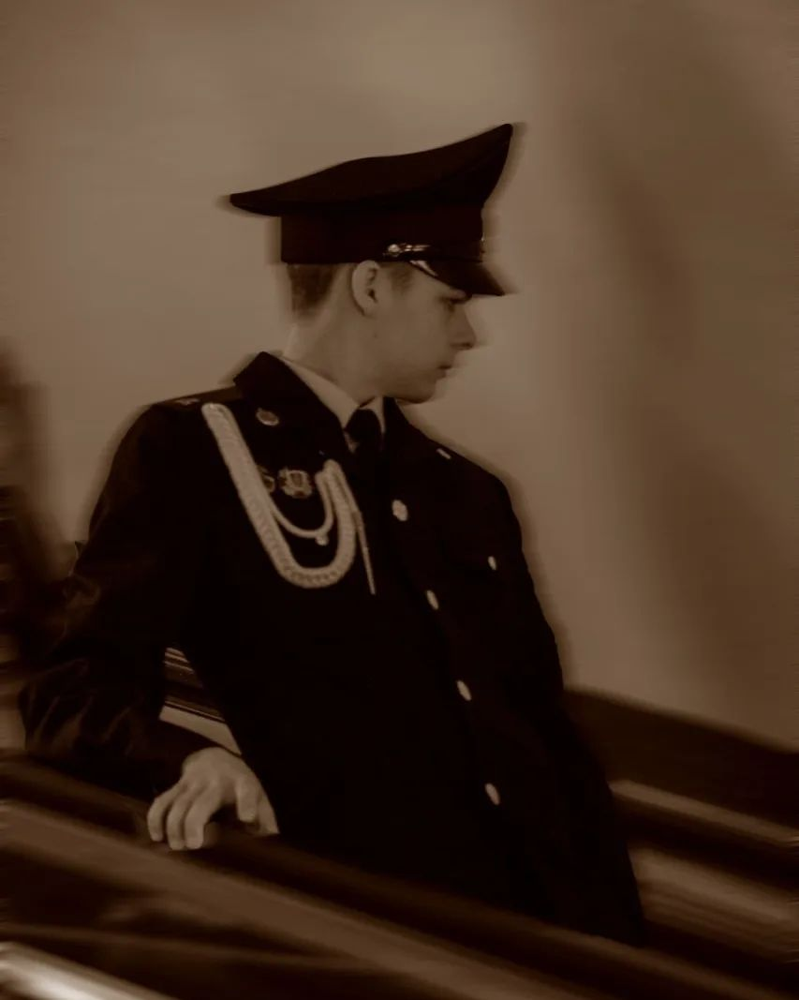

Фотоискусство
ㅤㅤЯ обожаю фотографировать и люблю все аспекты этого процесса: от выбора камеры и объектива до композиции и обработки снимков.
Иногда мне кажется, что фотография позволяет зафиксировать моменты, которые важно сохранить в памяти. Когда я смотрю на фотографии, я могу пережить эмоции и воспоминания, связанные с этими моментами. Это очень ценно для меня, потому что я верю, что фотографии могут не только украсить мою комнату, но и помочь запомнить важные события и людей в нашей жизни.
ㅤㅤТак же я веду свой профиль в инстаграм и телеграм.
Мои фотографии
Волейбол
ㅤㅤМне очень нравится волейбол. Этот вид спорта является одним из самых захватывающих и динамичных. Каждая игра наполнена яркими эмоциями, атмосферой соперничества и сотрудничества.
Одним из главных аспектов, который мне нравится в волейболе это командная рабода. Ведь только сильная и слаженная команда способна победить. Волейбол научил меня доверять своим товарищам по команде, принимать их ошибки. Играя в волейбол, я понял, что только объединёнными силами можно достичь поставленной цели.
ㅤㅤЯ играю в пляжный волейбол 4 года. Мой самый лучший напарник - Салаватик. Мы дружим с времён мезазойской эры (почти 11 лет).
Волейбольный клуб "Добряки"
Игры
ㅤㅤКомпьютерные игры - это одно из моих самых любимых развлечений. Я обожаю проводить время за экраном монитора, наслаждаясь увлекательными сюжетами и зрелищными сценами.
Больше всего мне нравится возможность погрузиться в абсолютно иной мир. Я могу стать героем фантастической истории, решать сложные головоломки, сражаться с монстрами или исследовать неизвестные миры.
ㅤㅤИграя в шутеры, я чувствую адреналин и азарт, когда убиваю врагов и защищаю свою команду. Это дает мне удовольствие и чувство удовлетворения, когда оказываюсь лучшим игроком и выигрываю матчи. В этом есть что-то завораживающее и захватывающее.
ㅤㅤНо больше всего мне нравятся одиночные игры:
Мои любимые игры
Музыка
ㅤㅤМузыка - это часть моей жизни, которая никогда не перестает меня вдохновлять и радовать. Я не могу представить свой день без моих любимых произведений, которые заполняют мою душу.